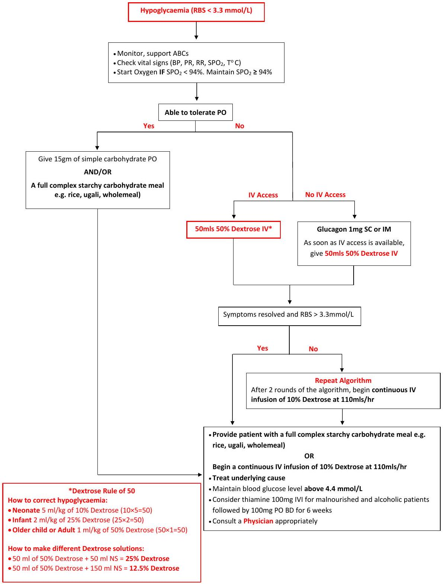
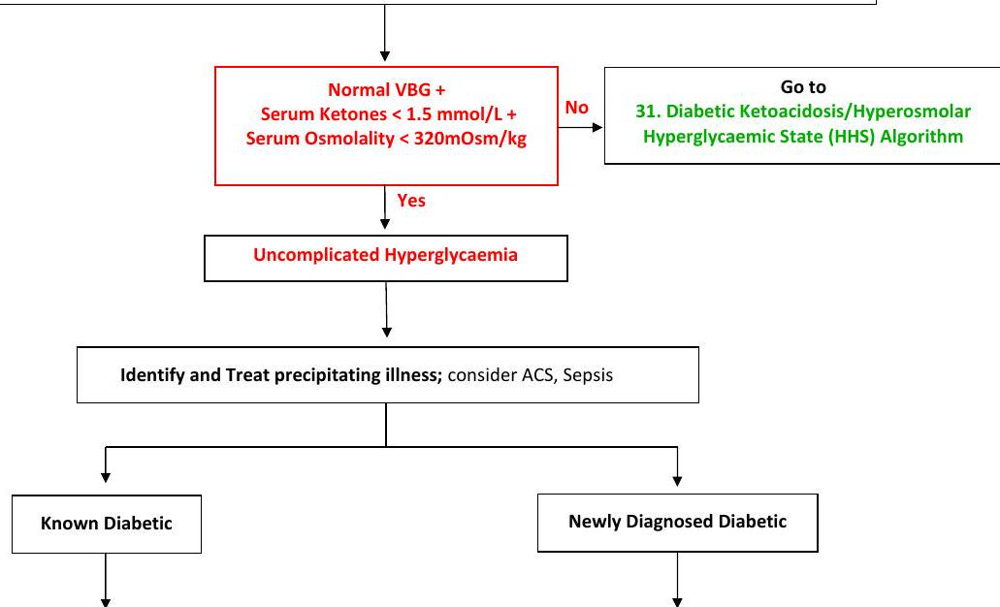
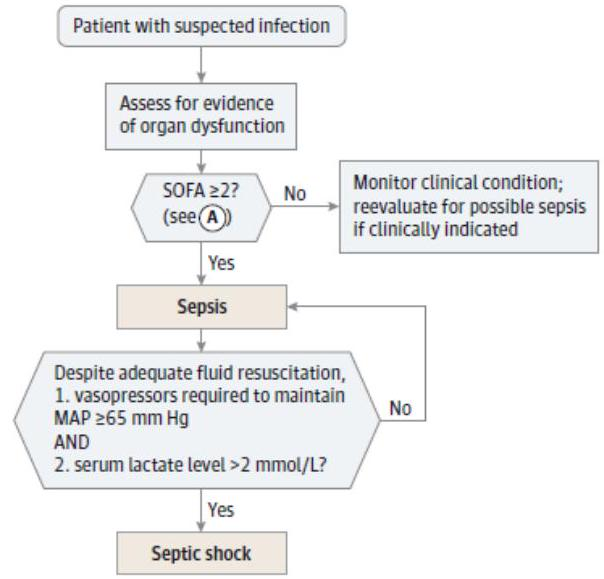
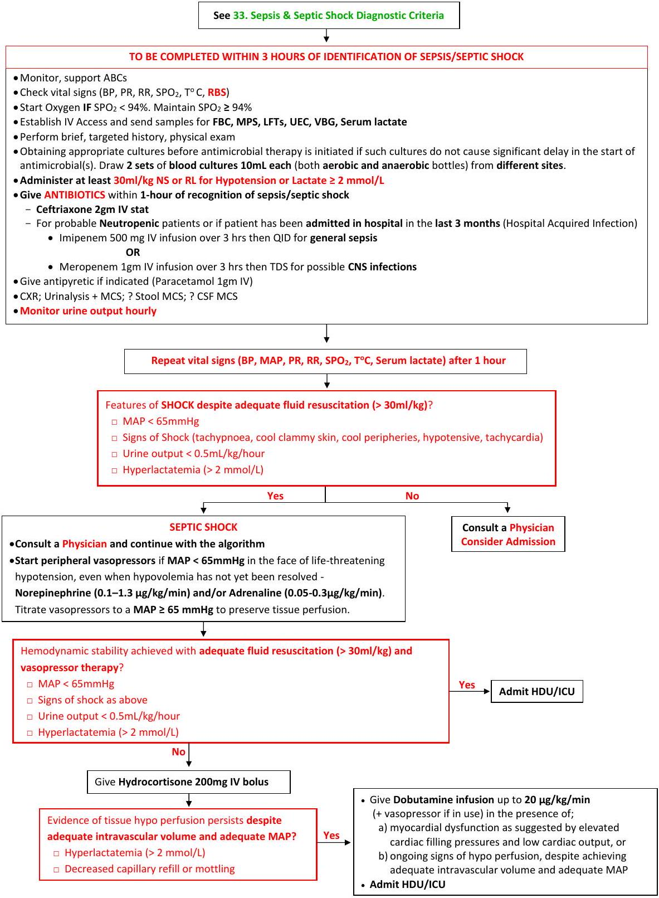

Endocrine & Infectious Diseases
29. Hypoglycaemia Algorithm
This clinical pathway is intended to supplement, rather than substitute for, professional judgment and may be changed depending upon a patient's individual needs. Failure to comply with this pathway does not represent a breach of the standard of care.
30. Hyperglycaemia Algorithm
This clinical pathway is intended to supplement, rather than substitute for, professional judgment and may be changed depending upon a patient's individual needs. Failure to comply with this pathway does not represent a breach of the standard of care.
Hyperglycaemia (RBS >14 mmol/L)
- Monitor, support ABCs
- Check vital signs (BP, PR, RR, SPO2, T°C)
- Start Oxygen IF SPO2 <94%. Maintain SPO2 ≥ 94%
- Establish IV Access and send samples for Serum Ketones, Venous Blood Gas (VBG)*, UEC and Urinalysis
- Obtain/review 12-lead ECG (if indicated)
- Perform brief, targeted, history and physical exam
- DO NOT GIVE INSULIN
*ABG Analysis available in MDCalc. A VBG often correlates well with ABG findings (except for PaO2) unless values are extremely abnormal
|
- Confirm compliance with medication - If not compliant, resume previous regimen - If compliant, optimize dosages - Advice on lifestyle Modification - Review RBS daily at nearest facility and keep record - Review in out-patient medical clinic after 5 days - Refer to Diabetic clinic if poorly controlled |
- Lifestyle modification advice - Start on Metformin as below - Begin with low-dose metformin - 500 mg BD with meals (breakfast and/or dinner). - Review RBS daily at nearest facility and keep record - Review in out-patient medical clinic after 5 days - After 5-7 days, if GI side effects have not occurred, advance dose to 850mg or 1gm before breakfast and dinner. - If GI side effects appear as doses advanced, can decrease to previous lower dose and try to advance dose later. - The maximum effective dose is usually 850 mg BD, with modestly greater effectiveness with doses up to 3 g per day. GI side effects may limit the dose that can be used. - Refer to Diabetic clinic |
31. Diabetic Ketoacidosis (DKA) / Hyperosmolar Hyperglycaemic State (HHS) Algorithm
This clinical pathway is intended to supplement, rather than substitute for, professional judgment and may be changed depending upon a patient's individual needs. Failure to comply with this pathway does not represent a breach of the standard of care.

| 1. Fluid Protocol | 2. Potassium Protocol | ||||||||
|---|---|---|---|---|---|---|---|---|---|
|
If in Shock; If Hypovolaemic but No Shock; |
|
||||||||
3. Insulin ProtocolFixed Rate IV Insulin Infusion: 0.1 units/kg/hr 4. Resolution CriteriaDKA: pH > 7.3 and Ketones < 0.6mmol/L |
|||||||||
Useful formulas in DKA (available in MDCalc)
Anion gap = Na+ - [(Cl- + HCO3-)]
Serum sodium correction = Na+ measured + 1.6 * (Glucose - 5.6) / 5.6 (all values in mmol/l)
Serum potassium correction during acidaemia = [K+] - (0.6 mmol/L X (7.4 - measured pH) X 10)
Serum osmolality (mOsm/L) = 2[Na+ + K+] (mmol/L) + Glucose (mmol/L) + BUN (mmol/L)
Total body water deficit (L) = 0.6men/children or 0.5women x body weight (kg) x [serum Na+/140 - 1]
32. Electrolyte Abnormalities Algorithm
This clinical pathway is intended to supplement, rather than substitute for, professional judgment and may be changed depending upon a patient's individual needs. Failure to comply with this pathway does not represent a breach of the standard of care.
- Monitor, support ABCs
- Check vital signs (BP, PR, RR, SPO2, T °C, RBS)
- Start Oxygen IF SPO2 <94%. Maintain SPO2 ≥ 94%
- Establish IV Access and send blood samples for FBC, UEC
- Obtain/review 12-lead ECG for K+ abnormalities
- Perform brief, targeted history, physical exam

| Hyponatraemia (<130 mmol/L) | Hypernatremia (>150 mmol/L) | Hypokalaemia (<3 mmol/L) | Hyperkalaemia (>5.5 mmol/l.) |
|---|---|---|---|
| For hypotensive patients, give NS/RL 20 mL/kg bolus and repeat until vital signs are stable | Give calcium to protect the heart (not bind K+) 10mls 10% Calcium Gluconate IV over 10min. Repeat if ECG changes persist. |
||
|
Consult a Physician for ALL Patients For patients with severe symptoms (vomiting, cardiorespiratory distress, abnormal or deep somnolence, seizures or coma (GCS ≤ 8) (usually in the 100 to 110 mmol/L range), regardless of whether hyponatraemia is acute or chronic: Start IV infusion of 150 ml 3% hypertonic saline over 20 min. Repeat infusion checking the serum sodium concentration every 20 min until a target of 5 mmol/l increase in serum sodium concentration is achieved or until the symptoms improve, whichever comes first. |
Consult a Physician for ALL Patients After the patient is stabilized, change fluids to D5 ½ NS to provide for maintenance requirements and ongoing losses. |
Mild-Moderate hypokalaemia (2-3 mmol/L) Patients who have mild or moderate hypokalaemia may need only oral potassium replacement therapy if nausea or vomiting is not the cause of the hypokalaemia. Giving 40 to 60 mmol of elemental potassium orally every 2 to 4 hours for 3 days. |
1. Check RBS. If RBS < 14 mmol/L, give 50mls 50% dextrose IV bolus 2. Then give 10units soluble insulin IV bolus Repeat 1 & 2 above if repeat K+ is >5.5 mmol/L |
| Consider using weight-based (2 ml/kg) rather than the fixed 150 ml infusion volumes of 3% hypertonic saline in case of obviously deviant body composition. Keep in mind that if hypokalaemia is present, correction of the hypokalaemia will contribute to an increase in serum sodium concentration. Do not expect patients with severe symptoms to completely recover immediately, as it may take some time for the brain to fully recover. |
Severe hypokalaemia (<2 mmol/L) Patients with severe hypokalaemia or those who cannot tolerate oral supplements will require IV potassium replacement. In general, potassium can be administered at a rate of 10 mmol/hour in a concentration of no more than 40 mmol/L. Infusion rates of 20-40 mmol/hour are acceptable in cases of paralysis or life-threatening arrhythmias. |
Nebulise Salbutamol 10 to 20 mg in 4 ml of NS over 10 minutes - 25-40% of patients do not respond secondary to tachyphylaxis. | |
| Consult a Physician for ALL Patients | Consult a Physician for ALL Patients | Consult a Physician for ALL Patients | Consult a Physician for ALL Patients |
33. Sepsis & Septic Shock Diagnostic Criteria
(SOFA and qSOFA Scores available on MDCalc)
(A) Sequential [Sepsis-Related] Organ Failure Assessment Score a
| System | 0 | 1 | 2 | 3 | 4 |
|---|---|---|---|---|---|
| Respiration PaO2/FiO2, mm Hg (kPa) |
≥ 400 (53.3) | <400 (53.3) | <300 (40) | <200 (26.7) with respiratory support | <100 (13.3) with respiratory support |
| Coagulation Platelets, ×103/µL |
≥ 150 | <150 | <100 | <50 | <20 |
| Liver Bilirubin, mg/dL (µmol/L) |
<1.2 (20) | 1.2-1.9 (20-32) | 2.0-5.9 (33-101) | 6.0-11.9 (102-204) | >12.0 (204) |
| Cardiovascular | MAP ≥ 70 mm Hg | MAP <70 mm Hg | Dopamine <5 or dobutamine (any dose)b | Dopamine 5.1-15 or epinephrine ≤ 0.1 or norepinephrine ≤ 0.1b | Dopamine >15 or epinephrine >0.1 or norepinephrine >0.1b |
| Central nervous system Glasgow Coma Scale scorec |
15 | 13-14 | 10-12 | 6-9 | <6 |
| Renal Creatinine, mg/dL (µmol/L) |
<1.2 (110) | 1.2-1.9 (110-170) | 2.0-3.4 (171-299) | 3.5-4.9 (300-440) | >5.0 (440) |
| Urine output, mL/d | <500 | <200 |
Abbreviations: Fio, fraction of inspired oxygen: MAP, mean arterial pressure; PaO2. partial pressure of oxygen.
a Adapted from Vincent et al.27
b Catecholamine doses are given as µg/kg/min for at least 1 hour.
c Glasgow Coma Scale scores range from 3-15; higher score indicates better neurological function.
The baseline Sequential [Sepsis-related] Organ Failure Assessment (SOFA) score should be assumed to be zero unless the patient is known to have preexisting (acute or chronic) organ dysfunction before the onset of infection. qSOFA indicates quick SOFA; MAP, mean arterial pressure.
Sepsis & Septic Shock Algorithm
This clinical pathway is intended to supplement, rather than substitute for, professional judgment and may be changed depending upon a patient's individual needs. Failure to comply with this pathway does not represent a breach of the standard of care.
34. Antimicrobial Guide
This clinical pathway is intended to supplement, rather than substitute for, professional judgment and may be changed depending upon a patient's individual needs. Failure to comply with this pathway does not represent a breach of the standard of care.
For detailed guidelines and other conditions not listed below, refer to your hospital's guidelines for antimicrobial use
| Condition | Comments/Caveats | Recommended Therapy |
|---|---|---|
| URTI/Sinusitis AVOID PRESCRIBING ANTIBIOTICS FOR UPPER RESPIRATORY TRACT INFECTIONS SINCE MOST ARE VIRAL. |
The most common cause of URTIs is viral and thus no antibiotics are necessary. A clinician should diagnose Acute Bacterial Rhinosinusitis (ABRS) when a) symptoms or signs of Acute Rhinosinusitis (ARS) persist without evidence of improvement for at least 10 days beyond the onset of upper respiratory symptoms or b) symptoms or signs of ARS worsen within 10 days after initial improvement (double worsening). DO NOT ORDER A CT SCAN TO DIAGNOSE SINUSITIS | Amoxicillin/Clavulanate 1gm PO BD x 5-10 days is the first-line therapy for most adults who meet the criteria for ABRS. In Penicillin-Allergic Patients: Azithromycin 500 mg PO OD x 3 days. Supportive therapy includes decongestants, saline irrigation, and mucolytics. Antihistamines have no role. |
| Pharyngitis/Tonsillitis AVOID PRESCRIBING ANTIBIOTICS FOR UPPER RESPIRATORY TRACT INFECTIONS SINCE MOST ARE VIRAL. |
The most predictable clinical parameter for GABHS pharyngitis is the Centor Score (available on MDCalc). a) Age < 15 years (+1) or ≥ 45 years (-1) b) History of fever >38°C c) Absence of cough, d) Swollen and tender anterior cervical lymph nodes e) Tonsillar exudates or swelling | Adult patients with acute exudative adult pharyngitis who report ≥ 4 Centor Score ONLY: Benzathine penicillin G 1.2MU IM stat OR Amoxicillin/Clavulanate 1 gm PO BD x 5-10 days. Consider single-dose Prednisone 60 mg PO or Dexamethasone 8 mg IM. Penicillin allergic: Azithromycin 500 mg PO on day 1 followed by 250 mg PO OD for 4 days. |
| Laryngitis | Mostly viral | No Antibiotics necessary |
| Acute Gastroenteritis AVOID PRESCRIBING ANTIBIOTICS FOR ACUTE GASTROENTERITIS WITHOUT SYSTEMIC DISEASE OR DYSENTERY |
Evaluation of faecal specimen needed for diarrhoea lasting > 1 day with features like bloody diarrhoea, moderate-severe disease, symptoms >7 days, immunocompromised patients, recent antibiotic use. Stool culture not cost-effective in most cases. Typhoid diagnosis is complex. | Supportive treatment usually sufficient. Antibiotics can prolong carrier state in salmonellosis. Treat ONLY patients with specific criteria: Ciprofloxacin 500 mg PO BD x 3 days. Loperamide may reduce duration but should be restricted to non-bloody stool. |
| Urinary Tract Infection (UTI) | Cloudiness/odor of urine is not definitive. A negative Leukocyte Esterase AND a negative urine Nitrate largely rule out infection. Asymptomatic Bacteriuria is NOT an indication for therapy. Urine cultures ONLY for pyelonephritis or complicated UTIs. Complicated UTI factors include male gender, structural abnormalities, catheters, etc. | Uncomplicated Cystitis: Ciprofloxacin 500 mg PO BD x 3 days OR Nitrofurantoin 100 mg TDS x 3 days. Uncomplicated Pyelonephritis (Outpatient): Ceftriaxone 1 g IV stat PLUS Ciprofloxacin 500 mg PO BD x 7 days. UTI in Pregnancy (Outpatient): Cefuroxime 500 mg PO BD for 7 days OR Nitrofurantoin 100 mg TDS x 3 days. |
| Sepsis & Septic Shock | See Sepsis & Septic Shock Algorithm | Give ANTIBIOTICS as an EMERGENCY (within the FIRST HOUR of recognition). - Ceftriaxone 2gm IV stat. For probable Neutropenic patients or Hospital Acquired Infection: - Imipenem 500 mg IV infusion over 3 hrs then QID OR - Meropenem 1 gm IV infusion over 3 hrs then TDS for possible CNS infections. |
| Community-Acquired Pneumonia | Diagnosis requires demonstrable infiltrate on imaging. Blood cultures indicated for severe CAP. Comorbidities increase risk. Inpatient therapy for CURB65 ≥ 2. Consider HCAP risk factors. | Outpatient: Amoxicillin/Clavulanate 1 gm PO BD x 7-10 days. (Allergic: Azithromycin). Inpatient: Amoxicillin/Clavulanate 1.2 gm IV TDS x 7-10 days. (+ Azithromycin 500 mg IV OD for severe cases). HCAP: Antipseudomonal beta-lactam e.g., Imipenem 500 mg IV QID. |
| Malaria | Criteria for severe malaria include prostration, multiple convulsions, acidosis, hypoglycaemia, severe anaemia, renal impairment, jaundice, pulmonary oedema, significant bleeding, shock, and hyperparasitaemia. | Uncomplicated: Artemether + Lumefantrine (Coartem®) dosed by weight for 3 days. Severe: IV Artesunate 2.4mg/kg at 0, 12, and 24 hours, then daily. Children < 20 kg need higher dose (3 mg/kg). |
| Community-Acquired Severe Intra-Abdominal Infection, Biliary, and Extra-Biliary Infections | Empiric coverage of Enterococcus is recommended | Piperacillin-Tazobactam 4.5 gm IV QID |
| Cellulitis/ Abscesses/ Folliculitis/ Carbuncle/ Furuncle | Most abscesses are Staph aureus. Most cellulitis is Group A beta-haemolytic streptococcus. Effective treatment of abscesses is I&D. Systemic antibiotics are rarely indicated unless extensive cellulitis, fever, etc. | Oral Therapy: Amoxicillin/Clavulanate 1gm PO BD x 7 days OR Clindamycin 450 mg PO QID x 7-10 days. Parenteral Therapy (Inpatient): Cefazolin 1gm IV q8 hours OR Clindamycin 600 mg IV q8 hours for 7-10 days. |
| Necrotizing skin & soft tissue infections | Surgical intervention is the major therapeutic modality. Can be Group A Strep/Staph or polymicrobial. | Consult a Surgeon |
| STI - Urethritis, Epididymitis, Orchitis, Proctitis, Cervicitis | Minimum criteria for clinical diagnosis of PID (all 3 present): bilateral lower abdominal tenderness, cervical motion tenderness, bilateral adnexal tenderness. | STI: Ceftriaxone 500 mg IM stat PLUS Azithromycin 1gm PO stat. PID (Mild-Moderate): Ceftriaxone 500 mg IM stat + Doxycycline 100 mg PO BD x 14 days + Metronidazole 500 mg PO BD x 14 days. PID (Severe/Inpatient): Ceftriaxone 1 gm IV OD x 14 days + Doxycycline 100 mg IV/PO BD x 14 days + Metronidazole 500 mg PO BD x 14 days. |
| HIV Post Exposure Prophylaxis (PEP) | Must be HIV negative at baseline, exposure within 72 hrs, high-risk exposure. Faeces, saliva, urine, etc., not infectious unless visibly bloody. Risk varies by exposure route. Counsel on risks/benefits, perform baseline tests, offer Hep B vax. | Initiate within 72 hrs. Continue for 28 days. ADULTS: Tenofovir/Lamivudine (TDF/3TC) + Dolutegravir (DTG). Use Atazanavir/Ritonavir (ATV/r) instead of DTG in women/girls of childbearing potential. CHILDREN: Abacavir/Lamivudine (ABC/3TC) + Lopinavir/Ritonavir (LPV/r). Follow up at 7, 14, 28 days and HIV testing at 3 and 6 months. |